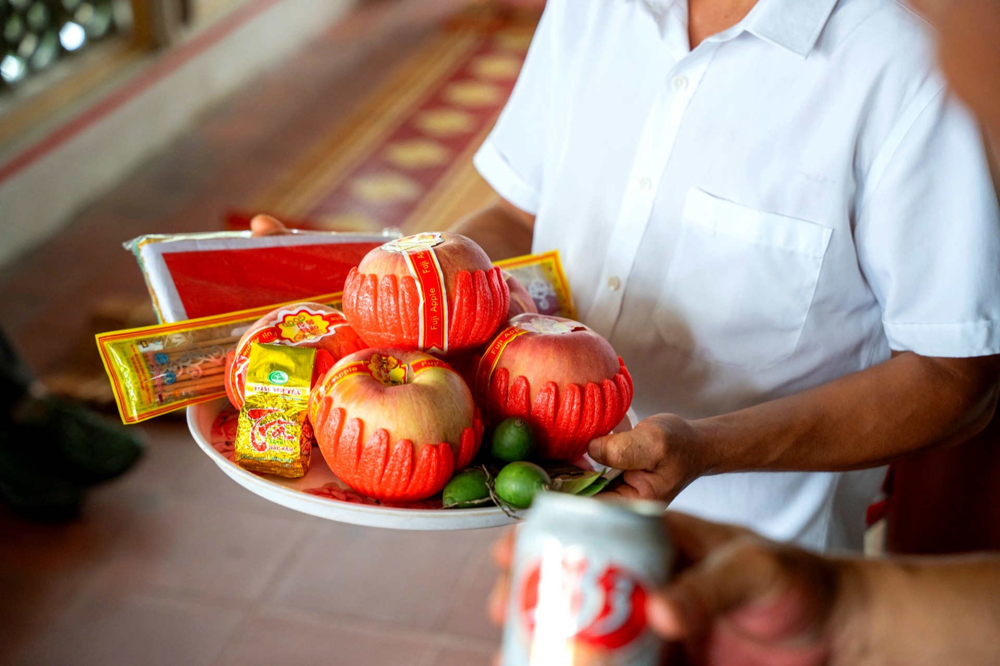

Loại hìnhTypeType
Di tích tâm linhSpiritual Heritage SitesSites de Patrimoine Spirituel

Đền Mẫu Thượng Thiên — còn gọi là Đền Ái Nàng — tọa lạc trên núi Đền thuộc thôn Ái Nàng, theo chuẩn lối kiến trúc cổ: tả Thanh long hữu Bạch hổ, tựa lưng vào núi Đền, mặt hướng ra sông Thanh Hà, hai bên là khoảng không của ruộng đồng và làng mạc. Thế đất hội tụ phong thủy, không gian vừa uy nghiêm vừa thanh tịnh.
Đền thờ Mẫu Quế Anh phu nhân, vị nữ thần che chở và phù hộ cho nhân dân, cùng hệ thống thờ tự đầy đủ: Tam toà Thánh Mẫu, Ngũ vị Tôn ông, Đức Thánh Trần, Bà Chúa Sơn Trang. Đặc biệt, đền lưu giữ 4 đạo sắc phong triều Nguyễn (Tự Đức 1853, Tự Đức 1880, Duy Tân 1909, Khải Định 1924) và 2 mâm đá cổ thời Nguyễn — khẳng định giá trị lịch sử lâu đời và vị trí trọng yếu trong đời sống tín ngưỡng vùng Mỹ Đức.
Mau Thuong Thien Temple — also known as Ai Nang Temple — is located on Den Mountain in Ai Nang village, adhering to ancient architectural principles: Green Dragon on the left, White Tiger on the right, backed by Den Mountain, facing Thanh Ha River, flanked by rice fields and villages. This auspicious feng shui setting creates a space that is both majestic and serene.
The temple worships Lady Mau Que Anh, the goddess who protects and blesses the people, along with a complete system of deities: Tam Toa Thanh Mau, Ngu Vi Ton Ong, Duc Thanh Tran, and Ba Chua Son Trang. Notably, the temple preserves 4 royal decrees from the Nguyen Dynasty (Tu Duc 1853, Tu Duc 1880, Duy Tan 1909, Khai Dinh 1924) and 2 ancient stone trays from the Nguyen era – affirming its long historical value and crucial position in the religious life of the My Duc region.
Le temple Mẫu Thượng Thiên — également appelé temple Ái Nàng — est situé sur la montagne Đền dans le village d'Ái Nàng, suivant les principes de l'architecture ancienne : Dragon Vert à gauche, Tigre Blanc à droite, adossé à la montagne Đền, faisant face à la rivière Thanh Hà, flanqué de rizières et de villages. Ce site au feng shui propice crée un espace à la fois majestueux et serein.
Le temple vénère Dame Mẫu Quế Anh, la déesse protectrice et bienfaitrice du peuple, ainsi qu'un système complet de divinités : Tam toà Thánh Mẫu, Ngũ vị Tôn ông, Đức Thánh Trần et Bà Chúa Sơn Trang. Notamment, le temple conserve 4 décrets royaux de la dynastie Nguyễn (Tự Đức 1853, Tự Đức 1880, Duy Tân 1909, Khải Định 1924) et 2 anciens plateaux en pierre de l'époque Nguyễn – affirmant sa longue valeur historique et sa position cruciale dans la vie religieuse de la région de Mỹ Đức.
| Tham quan, chiêm báiVisit and offer prayers.Visite et recueillement. | Dâng hương, lễ bái theo nghi lễ thờ Mẫu truyền thốngOffer incense and participate in traditional Mother Goddess worship rituals.Offrez de l'encens et participez aux rituels traditionnels de culte de la Déesse Mère. |
| Hướng dẫn tại chỗLocal GuidesGuides Locaux | Giới thiệu hệ thống thờ tự, sắc phong, 2 mâm đá cổIntroduction to the worship system, imperial decrees, and two ancient stone traysPrésentation du système de culte, des décrets impériaux et de deux anciens plateaux en pierre |
| Tìm hiểu di vật lịch sửDiscover historical artifactsDécouvrez les artefacts historiques | Nghe giới thiệu về 4 đạo sắc phong triều NguyễnLearn about the four imperial edicts of the Nguyễn dynasty.Découvrez les quatre édits impériaux de la dynastie Nguyễn. |
| Tham quan kiến trúcExplore Local ArchitectureDécouvrez l'architecture locale | Tiền tế, hậu cung, không gian phong thủy đặc sắcFront hall, sanctuary, and unique feng shui spaces.Salle avant, sanctuaire et espaces feng shui uniques. |
| Chụp ảnh cảnh quanCapture Scenic LandscapesImmortalisez nos paysages | Thế đất núi sông, kiến trúc đền, tầm nhìn ra sông Thanh HàMountain and river terrain, temple architecture, views of the Thanh Ha River.Le terrain montagneux et fluvial, l'architecture du temple, les vues sur la rivière Thanh Ha. |


Đền Mẫu Thượng Thiên hướng tới trở thành điểm du lịch tâm linh tiêu biểu của tuyến Ái Nàng trong hành trình khám phá Mường Cốc, kết hợp với Chùa Tiên và Đình Ái Nàng thành cụm di tích tâm linh – văn hóa liên hoàn. Giai đoạn tiếp theo tập trung vào số hoá và diễn giải 4 đạo sắc phong, xây dựng nội dung thuyết minh chuyên sâu về tín ngưỡng thờ Mẫu trong bối cảnh văn hóa người Mường – Việt vùng Mỹ Đức. Điểm đến Du lịch cộng đồng Mường Cốc, Xã Mỹ Đức – Thành phố Hà NộiĐền Mẫu Thượng Thiên aims to become a prominent spiritual tourism site on the Ái Nàng route within the Mường Cốc discovery journey, combining with Chùa Tiên and Đình Ái Nàng to form a continuous spiritual-cultural relic cluster. The next phase focuses on digitizing and interpreting the four imperial decrees, and developing in-depth interpretive content about the Mother Goddess worship in the cultural context of the Mường-Viet people of the My Duc region. A Mường Cốc Community Tourism Destination, My Duc Commune – Hanoi City.Đền Mẫu Thượng Thiên vise à devenir un site de tourisme spirituel emblématique de l'itinéraire Ái Nàng dans le cadre de la découverte de Mường Cốc, en se combinant avec Chùa Tiên et Đình Ái Nàng pour former un complexe continu de vestiges spirituels et culturels. La prochaine phase se concentrera sur la numérisation et l'interprétation des quatre décrets impériaux, et sur l'élaboration de contenus explicatifs approfondis sur le culte de la Déesse Mère dans le contexte culturel des peuples Mường-Viet de la région de My Duc. Une destination de tourisme communautaire de Mường Cốc, commune de My Duc – ville de Hanoi.